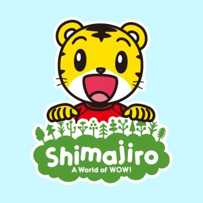

YouTubeについて
YouTubeは、動画のアップロード、視聴、共有ができるオンラインプラットフォームです。2005年に設立され、翌年Googleに買収されました。ユーザーは動画を公開し、チャンネルを作成して収益化することができます。広告収益やスポンサーシップ、商品販売などで収入を得ることが可能です。視聴者はコメントやライブ配信で交流でき、YouTube ShortsやYouTube Music、YouTube Kidsなどの特別な機能も提供されています。YouTubeは利用規約とコミュニティガイドラインを設け、違反行為に対して厳しく対応しています。
基本機能
- 動画のアップロードと共有: ユーザーは動画をアップロードして、全世界の視聴者と共有できます。動画は公開、限定公開、非公開の設定が可能です。
- 視聴: 世界中のユーザーがアップロードした動画を無料で視聴できます。広告なしで視聴できるYouTube Premiumもあります。
- チャンネル作成: ユーザーは自身のチャンネルを作成し、動画を一元管理できます。チャンネル登録者と交流も可能です。
収益化
- YouTubeパートナープログラム: チャンネル登録者数や再生時間が一定の基準を満たすと、広告収益を得ることができます。チャンネルメンバーシップやスーパーチャットも利用可能です。
- スポンサーシップと商品販売: クリエイターは企業とのスポンサーシップ契約や自身の商品を販売して収益を得ることができます。
コミュニティ機能
- コメント: 視聴者は動画にコメントを残し、クリエイターや他の視聴者と交流できます。
- ライブ配信: リアルタイムで視聴者とコミュニケーションを取ることができるライブ配信機能もあります。
- コミュニティ投稿: テキスト、画像、投票などを投稿して、視聴者と日常的に交流できます。
その他の機能
- YouTube Shorts: 短尺動画の形式で、縦長の動画を簡単に作成・視聴できる機能です。
- YouTube Music: 音楽専用のプラットフォームで、音楽やミュージックビデオを視聴できます。
- YouTube Kids: 子供向けのコンテンツを提供する専用のアプリケーションで、保護者がコンテンツを管理できます。
コミュニティガイドライン
YouTubeは利用規約やコミュニティガイドラインを設けており、暴力、差別、誤情報の拡散などに対して厳しい対応を行っています。ガイドラインに違反するコンテンツは削除されることがあり、違反を繰り返すユーザーはアカウントが停止されることもあります。
YouTubeの人気コンテンツカテゴリ
エンターテインメント
音楽ビデオ、映画の予告編、コメディなどの楽しいコンテンツが含まれます。
- 音楽ビデオ: アーティストの楽曲を視覚的に表現した動画。
- 映画の予告編: 映画の内容や雰囲気を紹介する短いクリップ。
- コメディ: 笑いを提供する様々な形式の動画。
教育
学びや知識を提供するコンテンツが中心です。
- オンライン講座: 専門的なスキルや知識を学べるビデオ。
- チュートリアル: 特定の技術や作業を教える動画。
- 科学実験: 科学的な現象や実験を説明する動画。
ライフスタイル
日常生活や趣味に関連するコンテンツが含まれます。
- 料理レシピ: 様々な料理の作り方を紹介する動画。
- フィットネス: 健康や体力づくりのエクササイズを提供する動画。
- 旅行ブログ: 旅行先での体験や観光地の紹介をする動画。
ゲーム
ゲームに関するコンテンツが中心です。
- ゲームプレイ動画: ゲームのプレイを映した動画。
- 実況: リアルタイムでのコメントや反応を含む動画。
- eスポーツ大会: プロのゲーム大会の模様を配信する動画。
小学生向け教育YouTubeチャンネルランキング

1. キッズライン (Kids Line)
教育的な内容や子ども向けの楽しい動画を提供するチャンネル。遊びながら学べるコンテンツが多く、幼児や小学生に人気。

2. しまじろうのわお！ (Shimajiro's Wao!)
しまじろうのキャラクターを使った教育的な動画。楽しいアニメやストーリーを通じて、学習をサポートします。
3. サンタのこども教室 (Santa's Kids Classroom)
子ども向けの学習動画を提供するチャンネル。様々な学習トピックを楽しく学べるコンテンツが揃っています。